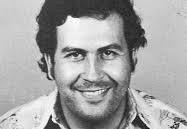
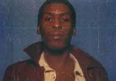
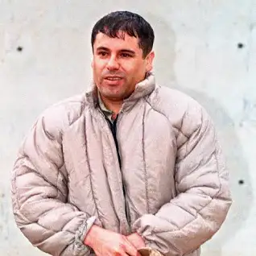

|  |
Született Pablo Emilio Escobar Gaviria
1949. december 1.
Rionegro, Antioquia, Kolumbia
Elhunyt 1993. december 2. (44 évesen)
Medellín, Antioquia, Kolumbia
Álneve
El Patrón
Don Pablo
El Padrino
El Tutur
El Diablo
El Mágico
El Zar de la Cocaína
El Duro
El Baron
El Doctor
|
Házastársa Victoria Eugenia Henao Vallejo (1976. március – 1993. december 2.)
Gyermekei
Sebastián Marroquín
Manuela Escobar
Rokonok Roberto Gaviria Cobaleda (anyai nagyapa)
José Obdulio Gaviria (unokatestvér)
Gustavo Gaviria Rivero (unokatestvér)
Gloria Gaviria Flores (unokatestvér)
Roberto de Jesús,
Gloria Inés, Argemiro,
Alba Marina,
Luz María,
Luis Fernando (testvér)
Foglalkozása
drogbáró
politikus
Aktív évek ~1970-1993
Halál oka Lőtt seb
Sírhely Montesacro temető, Itagüí, Kolumbia
Elkötelezettség Medellín kartell
Kolumbiai Képviselőház (1982. július 20. - 1983. október 26.)
Szövetségesek M-19
Riválisok Cali kartell
Jutalom összege 2,7 Milliárd Peso
Vád Kábítószer-kereskedelem
pénzmosás
gyilkosság
terrorizmus
megvesztegetés
csempészet
zsarolás
politikai korrupció
Ítélet 5 év börtön
Börtönbe zárva 1991
Szabadult 1992 (megszökött)
|
|  |
Felix Mitchell
Born Felix Wayne Mitchell Jr.
August 23, 1954
Oakland, California, U.S.
Died August 21, 1986 (aged 31)
Leavenworth, Kansas, USA.
Halál oka szúrás
Egyéb nevek "Felix the Cat"
Foglalkozás (ok) Bűnügyi főnök, kábítószer-kereskedelem
Allegiance 69 Mob
Büntetőjogi büntetés Életfogytig tartó börtön (1985)
|
Mitchell Oaklandben született és a 69. Avenue San Antonio faluban élt lakhatási projektek. A középiskolából való kimaradás után Mitchell létrehozta a "My Other Brother" vagy "6-9 Mob" nevű bűnszervezetet. "MOB". Tootie Reese L.A.-val kapcsolatban üzleti kapcsolatokat létesített a Öböl-terület, Los Angeles és Detroit.
Mitchell több mint egy évtizede harcolt a Mickey Moore bűncselekmény családjának és a Funktown USA bandának a versenyével, hogy teljes ellenőrzést szerezzen a heroinpiac felett.[4] 1984 előtt – 1985 és a szabadon bázikus kokain, a heroinhasználat gyakoribb volt. Becslések szerint Mitchell évente $ 5 milliót hozott be.
Mitchell-t a helyi és szövetségi bűnüldözés célozta meg. 1985-ben elítélték és a börtönben életre ítélték Leavenworth szövetségi büntetés-végrehajtási intézet ahol 1986. augusztus 21-én, két nappal a 32. születésnapja előtt, valamivel több mint egy évvel később halálosan szúrták meg.
|
|  |
Született 1957. április 4. (67 éves)[1]
Badiraguato[1]
Állampolgársága mexikói[2]
Házastársa
Emma Luciana Aispuro (2007. július 2. – )
Alejandrina María Salazar Hernández (1977–)
Griselda López Pérez
|
Gyermekei
Ovidio Guzmán López
Ivan Archivaldo Guzmán Salazar
Jesús Alfredo Guzmán Salazar
Édgar Guzmán López
Alejandrina Gisselle Guzmán Salazar
Rosa Isela Guzmán Ortiz
Nataly Flores lorea
Griselda Guadalupe Guzmán López
Laisha Guzmán
Emali Guadalupe Guzmán Coronel
Joaquín Guzmán López
Kim Guzmán Dolci
María Joaquina Guzmán Coronel
Szülei María Consuelo Loera Pérez
apanyan
Foglalkozása
drogkereskedő
drogbáró
Iskolái Academia Maria Reina
|